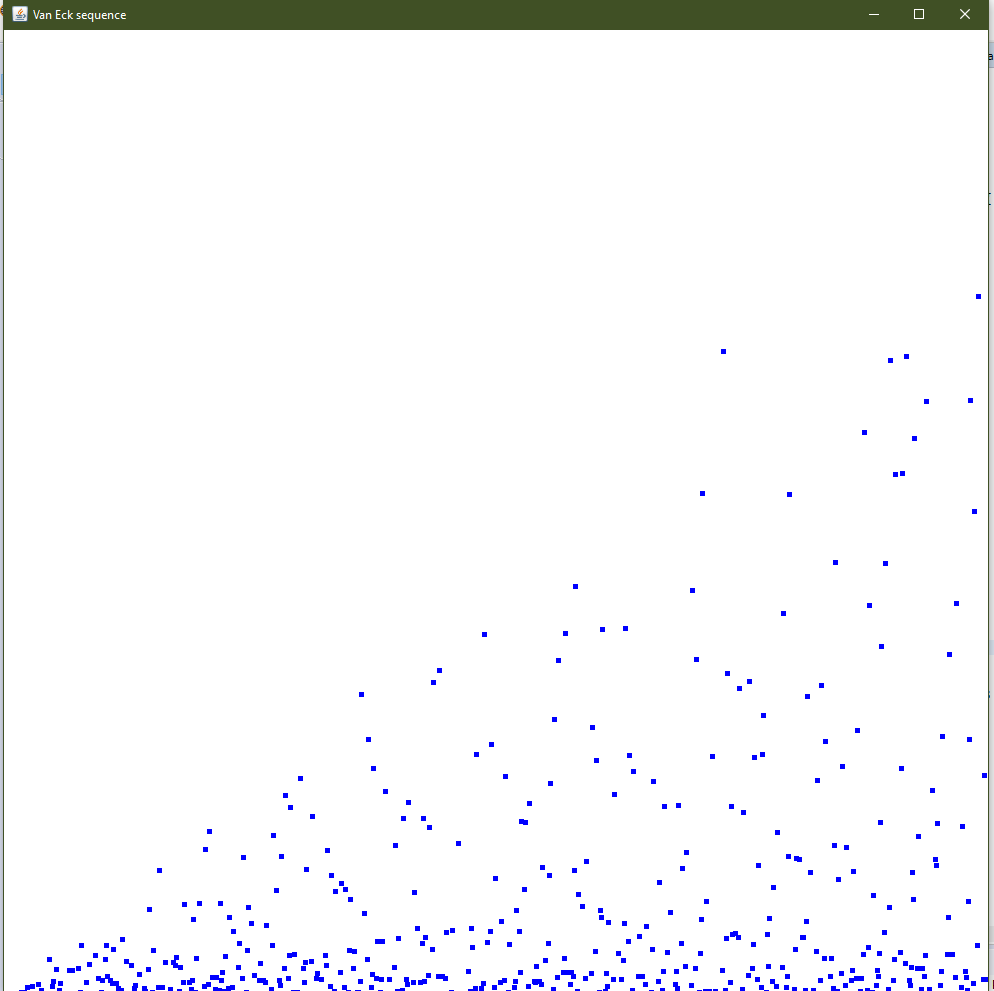

I am Benjamin Schreyer, a rising senior at BCC High School.I enjoy learning about STEM fields with a focus towards computer science and physics. During my time in middle and high school I took on various personal projects related to subjects such as robotics, math, and web development while also challenging myself in school with STEM classes. I have experience as a personal tutor teaching Python and related math. I have participated in school clubs where success depended on teaching others as well as learning from them. I enjoy teaching others because it benefits the students and really tests me on my knowledge of a subject. The details below should serve to showcase areas where I can be of help to your students as they become more proficient in STEM with some fun along the way.
Math
I have completed all the standard math courses for middle and high school students. I feel confident tutoring students taking any class up to Algebra 2. I can create lessons that expand on and review math learned in the previous school year or prepare and introduce students to math they will learn in the next year. Programming is an extension of math and as a result learning new math can be complemented with programming exercises and vice versa.
Computer Science
Programming has applications in many subject areas from making a dynamic website to controlling a robot. Below I have listed programming languages I know well and some common applications of these languages. Students can choose to learn a language and apply it to a project we design together based on their skill level or just learn a language and the funadmentals of math and computer science needed to write programs.
Python
Python is commonly used to automate management of websites and computer systems. Python is also by data scientists to easily set up virtual experiments. Python is a great language for beginners as Python is very human-readable, can run on any computer, and has many great extensions that provide visual output from programs such as a graph .
HTML, CSS, and Javascript
These are the languages of the web which can be used to build familiar things like browser games, social networking sites, or informational pages. I built this website with HTML and CSS in 9th Grade and many web apps to show math and physics concepts.
Java
A common enterprise language that allows programs to run on many types of computers. Minecraft is probably the most well-known Java program. Document editors, calculators, and chat applications can also be built with Java and used on computers or smart phones.

C++
Similarly C++ is chosen by many game developers and scientists for its speed of execution. Companies such as Microsoft and Electronic Arts choose C++ for most of their games. Scientist find use of C++ helpful for many applications such as calculating shapes of planetary orbits or tracking/modelling the spread of a disease.
Obviously this is not an exhaustive list of programming languages or the interesting programs we can write. If your child has interest in a subject area not listed, I will adapt their personal learning profile to include a tailored programming language to complement the subject matter and we can individualize projects to meet their needs.
Contact
My email address is schreyerbeng@gmail.com if you are interested in remote tutoring during Summer 2020.